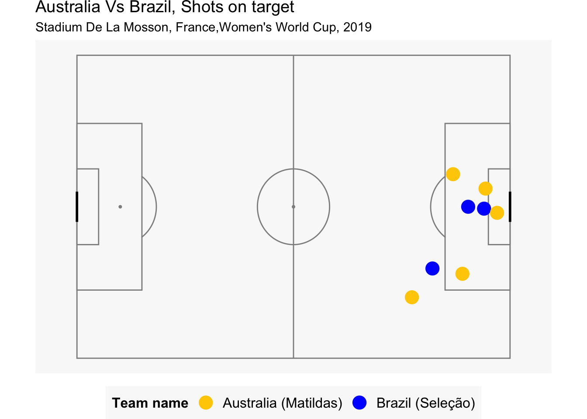
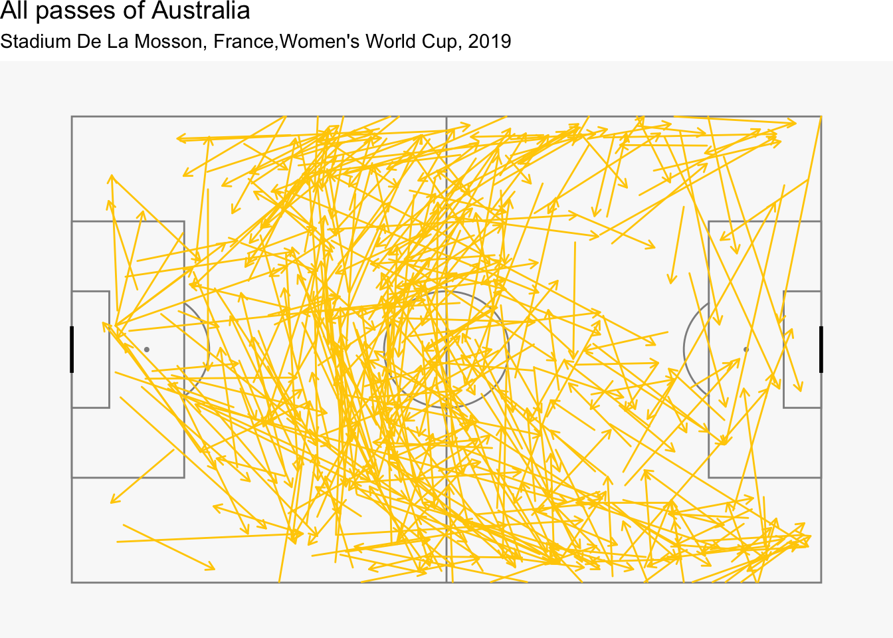
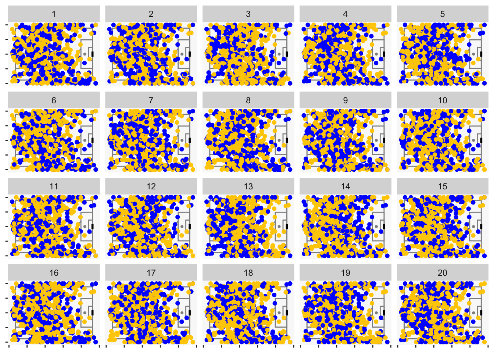
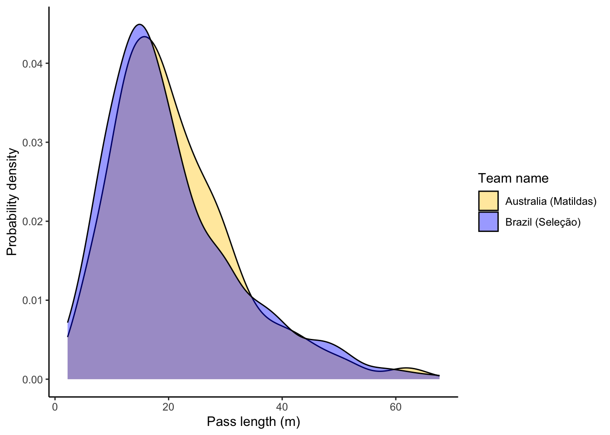
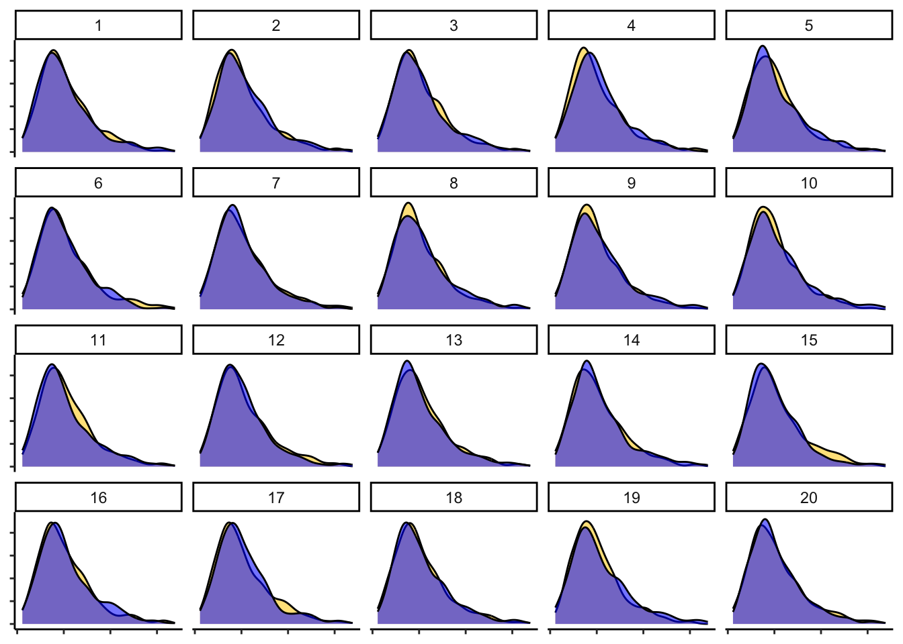
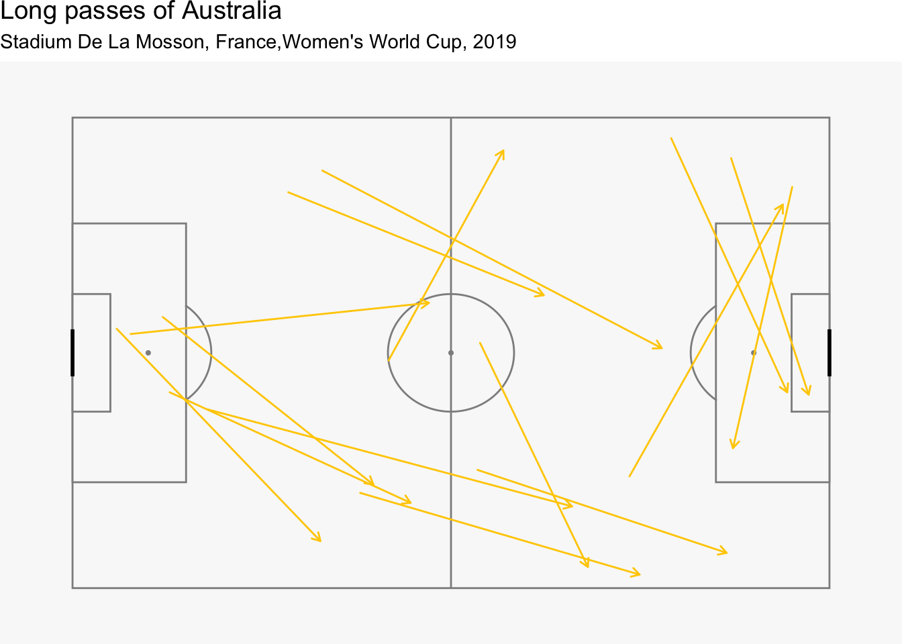

1 Introduction
The current football match analysis between the Matildas and the Selecao is an introduction to the interesting analysis and visualisation features of StatsBombR. A really nice introduction to working with the data is available here.
If you’re interested in the R code that was used for conducting the following analysis, please check out my GitHub repository here.
2 Exploratory data analysis
Task 1
Observe the pitch location of the key moments that occurred during the match and the inferences.
In order to visualise the shots on goal, we will filter the data with the following shot outcomes:
- Shots which led to goals.
- Shots which were saved by the goalkeeper.
The above two shot outcomes can be considered as “shots on goal” and will be visualised on the pitch through the code below.
Figure Figure 1 illustrates the number of shots on target in the match of Australia Vs Brazil for the Women’s World Cup. Following are the key observations:
- There were a total of 8 shots on target from both the sides.
- Of these 8 shots, Australia shot 5 goals on target while Brazil shot 3 goals on target.
- The above analysis can be further confirmed through the google analytics and can be referred to here.
Task 2
How many attempts were made in the match ? Are there any interesting insights ?

Figure 2 illustrates the number of shots registered by each player of each country. Following are our key observations:
- There were a total of 21 shots registered by the 2 teams. Of these 21 shots, 11 were attributed to Brazil while the remaining 10 were attributed to Australia.
- A total of 7 players from Australia registered shots while 8 players from Brazil registered shots.
- It can be observed that two players of Australia, namely Samantha May Kerr and Tameka Yallop had higher shots than the rest of the team. Kerr was attributed with 3 shots while Yallop with 2 shots.
- On the other hand, there were 3 players of Brazil with 2 shots on target while the rest of the team had registered one shot.
- Based on our analysis, we can say that there were certain players in the Australian team who dominated the shots in the match.
- For Brazil however, we can say that the shots were contributed nearly uniformly from the entire team.
Task 3
Study the passes made by each team. How do they differ from one another ? Can we determine any particular pattern of play ?


Upon analysing the completed passes made by Australia and Brazil throug Figure 3 and Figure 4, we observe the following:
- Australia made more number of successful passes as compared to Brazil as can be observed through the density of the arrows in the two figures.
- Australia were observed to effectively use the left and right flanks.
- On the other hand, Brazil were observed to overload the right flank but not use the left flank as much.
- Australia were also observed to play centrally with more passes in the middle of the field as compared to Brazil.
Let us now create null plots of the total passes by both teams to check for the presence of any key differences in the ways the two teams passed through the matches.
2.1 Null plots for total passes of Australia and Brazil

The null hypothesis which will be tested through visual inference is as follows:
\(H_o\): There is no significant difference in the way the passes were made in the match for the two teams.
Null generating mechanism: Permutation of the variable team.name by using the null_permute function.
Upon showing Figure 5 to 8 different subjects, the following results were observed:
- 1 of the 8 subjects were able to distinguish the actual plot (in position 13), citing more number of yellow points (Players from Australia) in the attacking half of the field.
- Remaining 7 of the 8 subjects were not able to distinguish the actual plot from the null plots.
The P-value for the above observations is 0.3365796. At a signficance level of 5% or in other words, with a confidence interval of 95 %, the P-value which is 33.65% suggests that the null hypothesis cannot be rejected.
Task 4
The type of passes can also be characteristic of a team’s play. Are there any characteristic differences in the pass lengths for the two teams ?.
Answer D

Based on the analysis of Figure 6, we can observe the pass lengths of both teams are very similar. However, these passes could be in different locations on the pitch.
Let us now create a lineup of this plot to understand whether there is a visual difference among the pass lengths by each team.

Following is the null hypothesis and the null generating mechanism which we will be using for assessing the null plot.
\(H_o\): There is no significant difference in the pass lengths of the two teams.
Null generating mechanism = Permutation of the team name by using the null_permute function.
Upon analysing Figure 7, we could make the following observations:
- 8 subjects were allowed to select the most unique plot in the lineup.
- All 8 of the subjects chose a plot which was not the actual plot.
The P-value for the above observations is 1. At a signficance level of 5% or in other words, with a confidence interval of 95 %, the P-value which is 100% suggests that the null hypothesis cannot be rejected. As a result, we can say that there is not enough evidence that suggests that the pass lengths of the two teams are different from each other.
2.2 Deeper analysis into passes of each team
While we couldn’t find signficant difference in the pass lengths of each teams, however, can we observe any interesting insights for the long passes made by each team ?


Based on our analysis of Figure 8 and Figure 9, we can make the following observations:
- Most long passes for Australia originated from the Goalkeeper’s position
- On the other hand, Brazil’s long passes originated from the defense. This suggests that Brazil employed short goal kicks while Australia flung more balls from the goalkeeping position to an attacking position.
Let us now observe how do the key passes change for each team.


Upon analysing the key passes as illustrated by Figure 10 and Figure 11, we can make the following observations:
- Australia was able to make more number of key passes in the box as compared to Brazil.
- Brazil were able to make only 4 outfield passes in the box while the other 2 were attributed to corners.